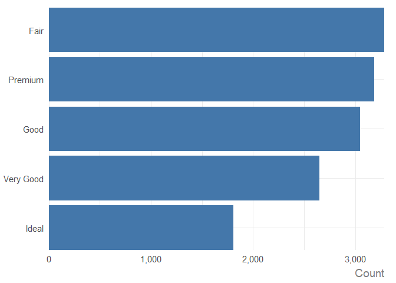
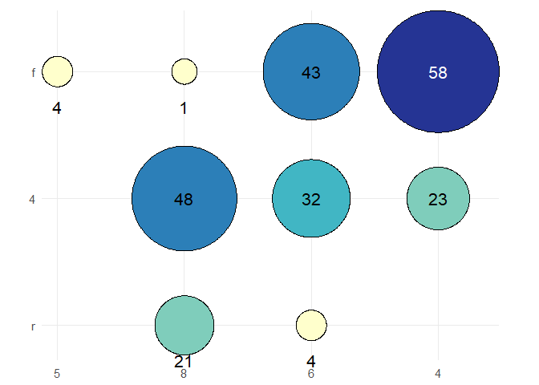
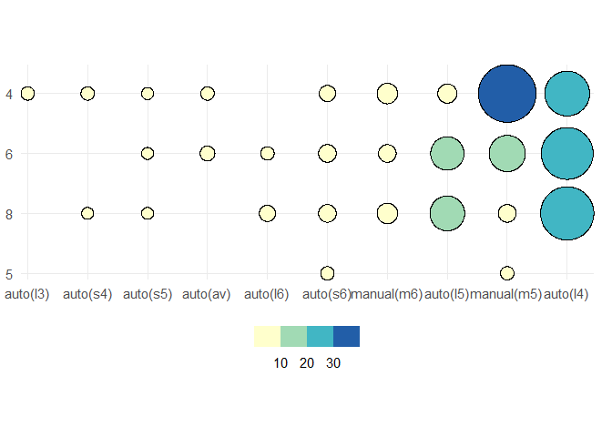
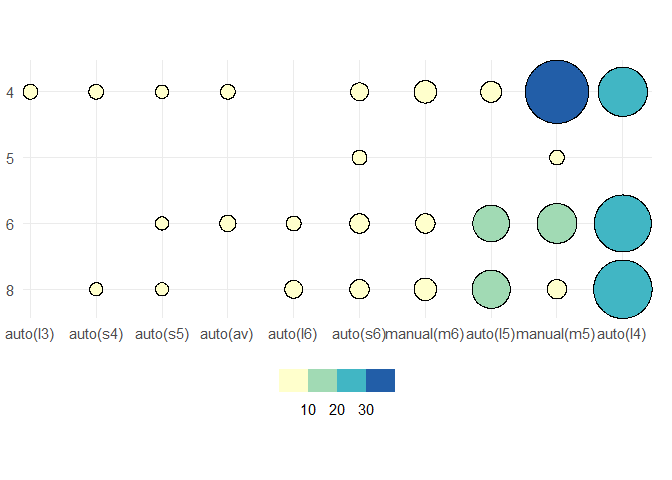
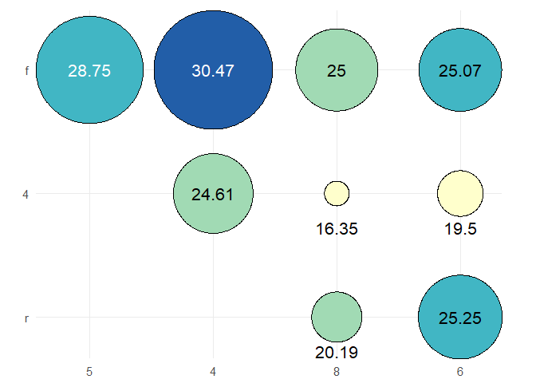
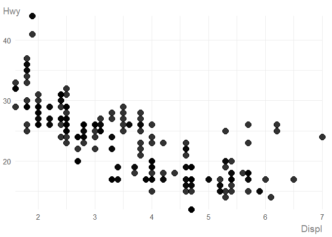
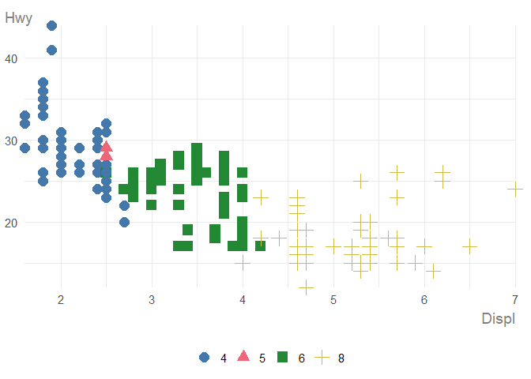
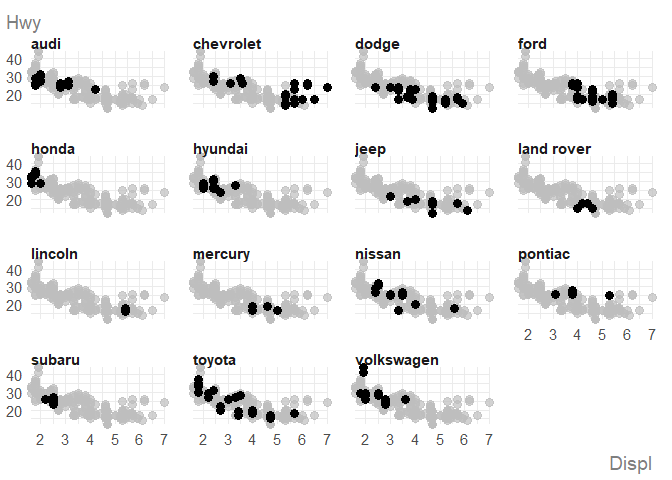
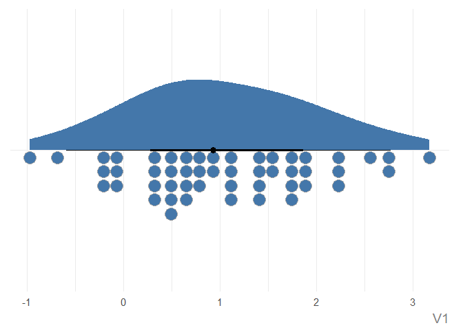
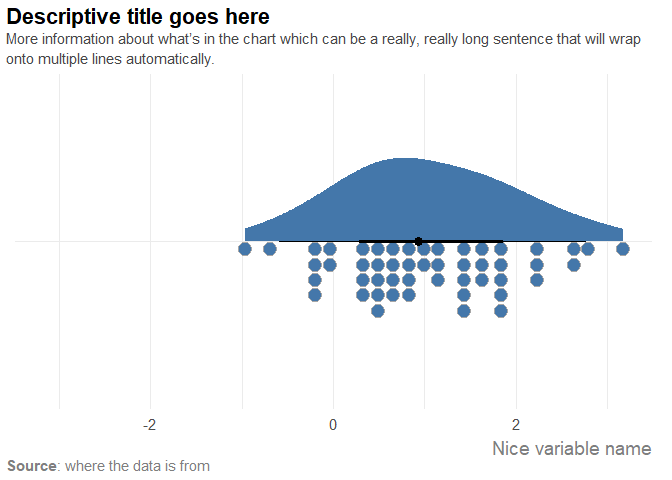

ggauto is an opinionated ggplot2 extension package to automatically choose the best chart type and styling, based on the types and values in the data. It’s based on the following three principles:
- There is no automatically perfect chart type for a given data type, but some are better than others.
- Default styling for charts should improve clarity and be as accessible as possible.
- Data pre-processing is a separate step to plotting, and you need to understand what your data is before you plot it.
[!WARNING]
If you don’t like some (or all) of the opinionated choices in this package, make a fork and create your own version. Bug reports and/or fixes are extremely welcome for things that don’t work, but stylistic changes that are personal preferences will not be addressed.
This package is built on the philosophy that data wrangling and plotting are separate parts of the process of building a chart. Tasks like ordering data, converting to correct date formats, or computing summary statistics should generally be performed before passing into a plotting function.
In terms of styling, the defaults differ from ggplot2 in the following ways:
- The use of a white background to improve contrast.
- Larger text which is aligned horizontally to improve readability.
- Improved styling for title and subtitle, including automatic text wrapping for long text.
- Colours that are more likely to be accessible, using Paul Tol’s palettes.
- Combined use of either shapes or direct labels alongside colour to improve accessibility.
- Symmetric
yaxis, when0is included in the data (for some chart types), to enable comparison. - Different chart types when users try to make spaghetti line charts.
- Unless a factor where a specific order is defined, categorical variables are arranged by magnitude instead of alphabetically.
Installation
Install from CRAN:
install.packages("ggauto")You can install the development version of ggauto from GitHub with:
# install.packages("pak")
pak::pak("nrennie/ggauto")Load the package:
Mapping data types to chart types
Variable types
The available data types are based on the scale_x/y_ options in ggplot2:
- Continuous
- Discrete (categorical)
- Date (including time and datetime)
This package assumes that you have correctly pre-processed your data i.e. is based on the assumption that you understand what the columns in your data are before you try to plot it. This means that if, for example, you have data for years encoded as numeric 2021 or "2021", you would convert it to a date object before plotting. The package also assumes that all data is in long format.
Chart types
| var1 | var2 | var3 | Chart Type | Implemented |
|---|---|---|---|---|
| Continuous | - | - | Raincloud plot | Yes |
| Continuous | Continuous | - | Scatter plot | Yes |
| Continuous | Continuous | Discrete | Scatter plot with coloured shapes | Yes |
| Discrete | - | - | Bar chart (showing count of categories) | Yes |
| Discrete | Continuous | - | Bar chart (if one value per category) or raincloud plot (if multiple values per category) | Yes |
| Discrete | Discrete | - | Heatmap (showing count of category combinations) | Yes |
| Discrete | Discrete | Continuous | Heatmap (showing continuous variable) | Yes |
| Date | Continuous | - | Line chart | Yes |
| Date | Continuous | Discrete | Line chart with coloured lines | Yes |
Examples
We’ll be using some of the built-in datasets from ggplot2 in these examples, so we’ll load the package here:
Visualising distributions
If you have only continuous variable and you want to visualise the distribution, for example:
penguins |>
ggauto(bill_dep)
#> Warning: Removed 2 rows containing missing values or values outside the scale range
#> (`stat_slabinterval()`).
#> Removed 2 rows containing missing values or values outside the scale range
#> (`stat_slabinterval()`).
You can pass the data directly instead of using the pipe:
ggauto(penguins, bill_dep)
#> Warning: Removed 2 rows containing missing values or values outside the scale range
#> (`stat_slabinterval()`).
#> Removed 2 rows containing missing values or values outside the scale range
#> (`stat_slabinterval()`).
Or pass it in as a vector:
ggauto(penguins$bill_dep)
#> Warning: Removed 2 rows containing missing values or values outside the scale range
#> (`stat_slabinterval()`).
#> Removed 2 rows containing missing values or values outside the scale range
#> (`stat_slabinterval()`).
If you have multiple categories, and you want to visualise the distribution for each of them, i.e., you have one discrete variable, and one continuous variable, then multiple raincloud plots are produced.
penguins |>
dplyr::filter(species == "Adelie") |>
ggauto(island, flipper_len)
#> Warning: Removed 1 row containing missing values or values outside the scale range
#> (`stat_slabinterval()`).
#> Removed 1 row containing missing values or values outside the scale range
#> (`stat_slabinterval()`).
Visualising data over time
If you have a single variable to show over time, i.e., one date variable, and one continuous variable:

a line chart is produced.
If you need to show how multiple variables change over time, i.e., one date variable, continuous variable, and one discrete variable, the type of chart will depend on how many categories (unique values in the discrete variable) you have.
If you have 6 or fewer categories, a multi-line chart is created, with colours and symbols identifying the categories. Category labels are added at the end of each line automatically.
txhousing |>
dplyr::filter(city %in% c("Houston", "Fort Worth", "San Antonio", "Austin")) |>
dplyr::mutate(date = lubridate::ymd(paste0(year, "/", month, "/01"))) |>
ggauto(date, sales, city)
If you have more than 6 categories, the plot type changes to a faceted line chart, with one category highlighted on each facet:
txhousing |>
dplyr::filter(city %in% c(
"Houston", "Fort Worth", "San Antonio", "Austin",
"Bay Area", "Dallas", "Paris", "San Angelo"
)) |>
dplyr::mutate(date = lubridate::ymd(paste0(year, "/", month, "/01"))) |>
ggauto(date, sales, city)
Visualising magnitudes and ranks
If you have a single discrete variable, a bar chart showing the counts of each category is created:
diamonds |>
ggauto(cut)
If you have pre-computed the counts or some other summary statistics, i.e., if you have one discrete variable, and one continuous variable with only a single value for each discrete variable, a bar chart of the values is created:
diamonds |>
dplyr::group_by(cut) |>
dplyr::summarise(med_price = median(price)) |>
ggauto(cut, med_price)
As you can see, when the discrete variable is a factor (i.e. cut), the desired order is respected. If the discrete variable is not a factor, the bars are ordered from highest to lowest instead of the default alphabetical ordering:
diamonds |>
dplyr::group_by(cut) |>
dplyr::summarise(med_price = median(price)) |>
dplyr::mutate(cut = as.character(cut)) |>
ggauto(cut, med_price)
If you have two discrete variables, then a heatmap is created showing the count of each combination of categories. Labels are added showing the count.
mpg |>
dplyr::mutate(cyl = as.character(cyl)) |>
ggauto(cyl, drv)
If there are more than 6 categories on either axis, labels are replaced with a legend:
mpg |>
dplyr::mutate(cyl = as.character(cyl)) |>
ggauto(trans, cyl)
Again, if one or both of the discrete variables is a factor, then the order is respected:

If you have two discrete variables and a third continuous variable showing some summary statistic for each category combination, a heatmap showing that value is created. Labels are rounded to 2 decimal places.
mpg |>
dplyr::mutate(cyl = as.character(cyl)) |>
dplyr::group_by(cyl, drv) |>
dplyr::summarise(mean_hwy = mean(hwy)) |>
dplyr::ungroup() |>
ggauto(cyl, drv, mean_hwy)
#> `summarise()` has grouped output by 'cyl'. You can override using the `.groups`
#> argument.
If there are multiple continuous values per combination of categories, and error is returned, asking you to first summarise the data:
mpg |>
dplyr::mutate(cyl = as.character(cyl)) |>
ggauto(cyl, drv, hwy)
#> Error in `ggauto()`:
#> ! Too many values per category. Summarise data first.Visualising correlation
To show the correlation between two continuous variables:
mpg |>
ggauto(displ, hwy)
To show the correlation between two continuous variables, split by a third discrete variable, a scatter plot using colours and shapes is created:

If you try to use more than 6 colours (categories), the chart type changes to a faceted scatter plot with one category highlighted on each facet:

Editing charts
Scales
For scatterplots, raincloud plots, and line charts, one or both of the axes may be symmetric about 0 by default. This happens automatically when 0 exists in the range of values. Since the output of ggauto() is simply a ggplot2 chart, you can override this if you don’t want it:
set.seed(123)
plot_data <- data.frame(
v1 = rnorm(50, 1)
)
ggauto(plot_data, v1) +
scale_x_continuous()
#> Scale for x is already present.
#> Adding another scale for x, which will replace the existing scale.
You’ll get a warning to say you are replacing the existing scale which you can ignore because it’s what you’re trying to do!
Similarly, you can edit the default colour/fill scales. However, the default palette is chosen to be accessible.
Text
You can a title, subtitle, caption, and labels with the labs() function in ggplot2 as you normally would, or directly using the same arguments in ggauto(). The latter is recommended as the arguments are used a little abnormally to implement the styling. You can add markdown formatting into the title, subtitle, or caption:
plot_data |>
ggauto(v1,
title = "Descriptive title goes here",
subtitle = "More information about what's in the chart which can be a really, really long sentence that will wrap onto multiple lines automatically.",
caption = "**Source**: where the data is from",
xlab = "Nice variable name"
)
By default, the x or y axis title is removed on chart types e.g. where the axis is a date or category and a further label stating that is unnecessary. Unless otherwise specified, the axis labels are clean versions of the column names where it’s parsed in sentence case, with underscores removed.
You can edit the size and family of the text using the base_size and base_family arguments. Other plot elements e.g. lines and points scale relative to the base_size as well.